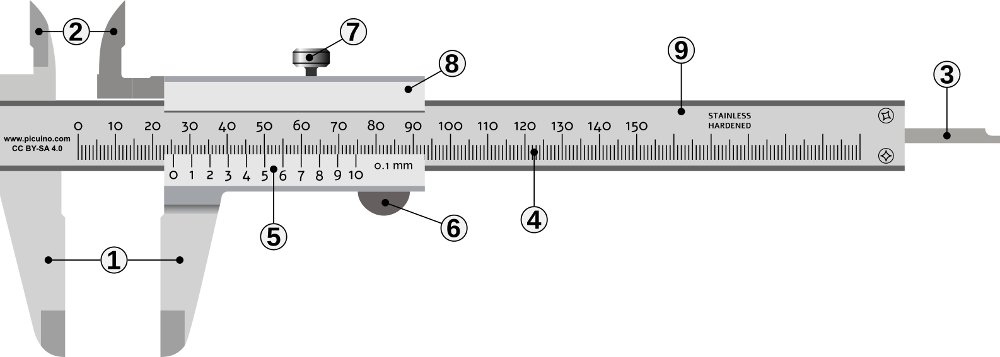
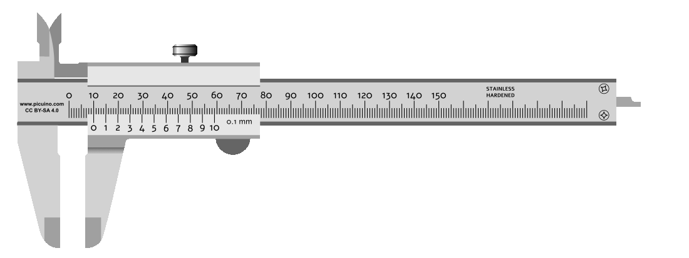
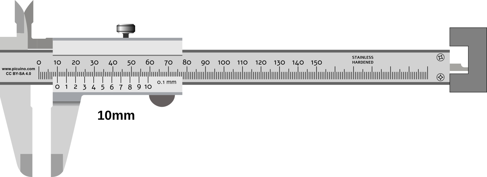
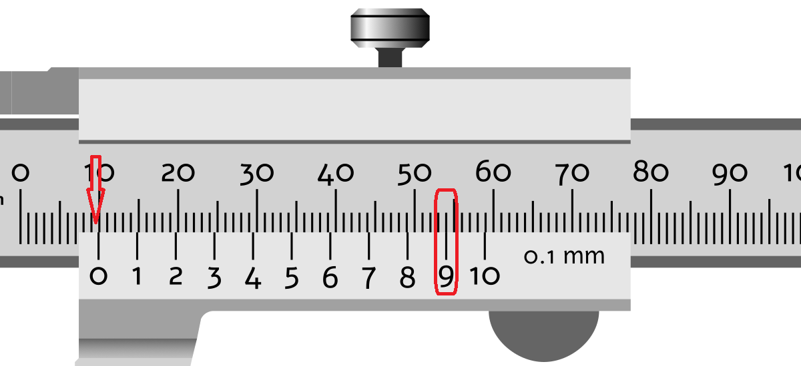

El:index:calibre¶
El calibre ** **, també anomenat ** King's Foot **, és un instrument de mesura de major precisió que una regla mil·límetre.
El calibre té diverses mandíbules i una sonda amb què es poden mesurar fàcilment diàmetres exteriors, diàmetres i profunditats interiors.
El seu ** nonio ** també es diu escala ** vernier ** és una escala auxiliar que permet la mesura de distàncies amb precisió de 0,1 mil·límetres a 0,02 mil·límetres. Aquesta precisió millora 10 vegades o més la precisió d’una regla mil·límetre.
Parts del calibre¶
Un calibre es compon de les parts següents:
{kind=link}

Parts d’un calibre o peu del rei.¶
- Mesura a l'aire lliure.
- Articulacions per mesurar interiors.
- Sonda per mesurar les profunditats.
- Escala Milimetada principal.
- Nonio per llegir fraccions mil·límetres.
- Botó lliscant.
- Cargol de fre.
- Diapositiva (part mòbil del calibre).
- Regla (part fixa del calibre).
{kind=link}

Lliscament d’un calibre que avança sobre la regla.¶
Realització de mesures¶
A les imatges següents podeu veure com es prenen les mesures exteriors, interiors i de profunditat d’una peça.

Calibre prenent una mesura exterior.¶

Calibre prenent una mesura interior.¶
{kind=link}

Calibre prenent una mesura de profunditat.¶
Mesura amb Nonio¶
La mesura en mil·límetres d’un calibre es pot observar a l’escala principal, on coincideix amb la marca 0o del Nonio.
La mesura en mil·límetre es pot observar en el punt on una de les línies noianes coincideix exactament amb una línia d’escala principal.

Mesura d’una distància de 16,6 mil·límetres.¶

Mesura d’una distància de 24,0 mil·límetres.¶
{kind=link}

Mesura d’una distància de 9,9 mil·límetres.¶
Calibre virtual¶
Simulació d’un calibre amb precisió de 0,05 mil·límetres <https://www.stefanelli.eng.br/es/calibre-virtual-simulator-milimetro-05/> `__.
Exercicis de mesurament¶
Full amb exercicis per realitzar distàncies amb el calibre
: Descàrrega: Exercicis de mesura amb calibre. Format PDF. <Mechalibre-Measured.pdf>